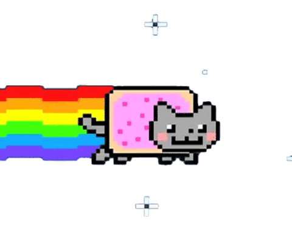
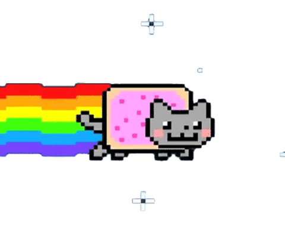

Welcome to ZLP & NJR's Album! üòª
A place to capture our moments together üíñüêæ
First Memory
The first time ever I saw your face, I saw the sun rise in your eyes, and the moon and stars were the gift you gave to the dark and empty skies.

HONG KONG journey


Liao Ning journey


Seoul journey

 
